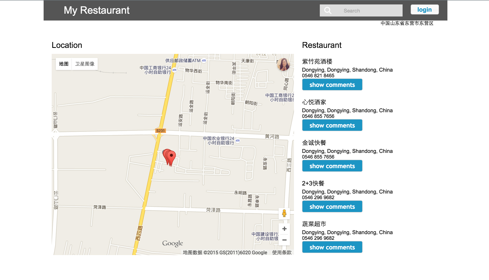
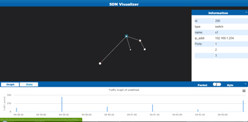

90s' otaku, like to entertain myself. I'm a painter graduated from computer science major, and also a programmer live in the world of ACG.
Applay for front end development programmer. I am a 2015 graduate，and graduated from Master of Computer Science in the University of Queensland. I have got to know front end for three years, but involved in project and grogramming for one and a half year. Beyond front end programming, I am familiar with database, PHP, interaction design and computer network, and I also has cartoon design expertise, and proficient in using PS and other image processing software.

Master of Computer Science 2014~2015
Major：Data Mining、Web Information System、Advanced Database、Advanced Human-Computer Interaction、Computer Network、Spatial and Multimedia Database
Score：Top 20%
Advanced Database and Web Information System full mark (7 High Distinction，full mark 7), Data Mining, Computer Network and Spatial and Multimedia Database distinction (6 Distinction), thesis research distinction（6 Distinction）Information Management and System 2009~2013
Major：Object-Oriented Programming、Webpage Desigh、Project Management, Database Systems, Linux, Information Networks, E-commerce, etc.
Score：Top 30%
Won (Grade intellectual first) Individual Scholarships in 2012 / School Scholarship in 2010, 2012/School Merit Student in 2012/ National Innovation Research Project (carbon emissions trading platform) between 2011-2012 / University Community PSAs Design Competition Third Prize in 2011
Link：www.myj.nameDue to the dynamic data is real data, involving privacy，I Unable to public APIkey and SystemID. If you has registered pvoutput.org, then your account can be used.
It aims to change residents behavior of electricity consumption using interactive way. Independently responsible for the entire site, including front end and back end, design and construction of the databases. The techniques and frameworks used include HTML, CSS, JS and Jquery, Highcharts and Bootscrap library, AJAX, PHP and SQL and Mysql.


Link：http://infs3202-t8fuw.uqcloud.net/username:s4370196 password:jiamengyiren555 Due to link to Google API, please use the VPN in China ~
Use JS and Jquery library, load Google Maps and use Ajax updated in real time according to the map center. Backend is built using PHP and MySQL to develop the Administrator platform. I was served as excellent design to give a demonstration.
Simulate SDN network visualization, responsible for front-end design and interaction, using Jquery and Highcharts, not including 3D rendering.
The first edition of Shandong University of Technology Business School attendance system (on-line), responsible for front-end design.


National Computer Rank Examination Grade 2 JAVA Computer-based test full mark
National Computer Rank Examination Grade 3 Network Technology Computer-based test full mark
National College English Test Level Six
IELTS Academic Mark 7（Full Mark 9）